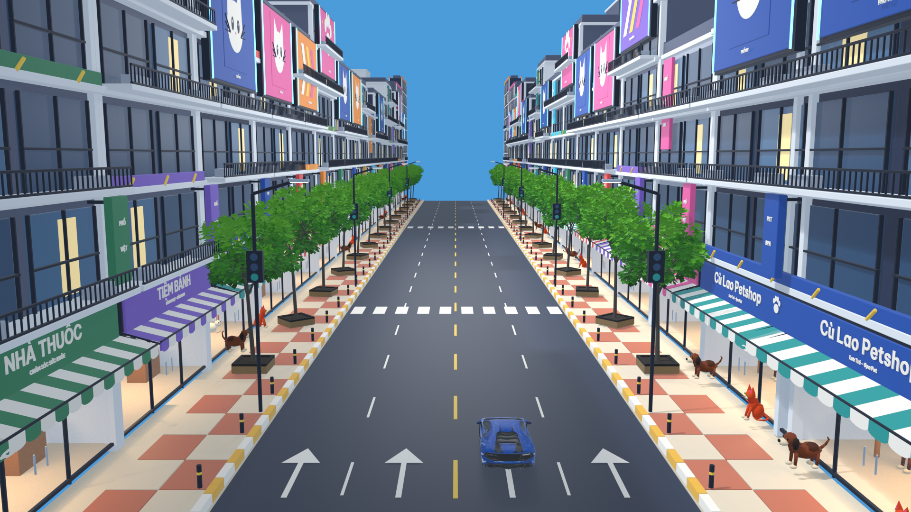
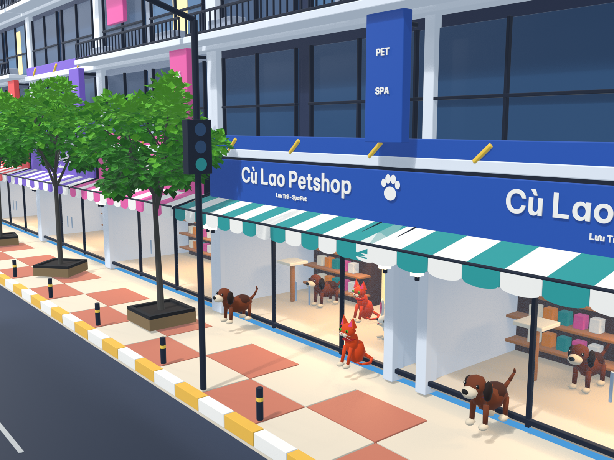
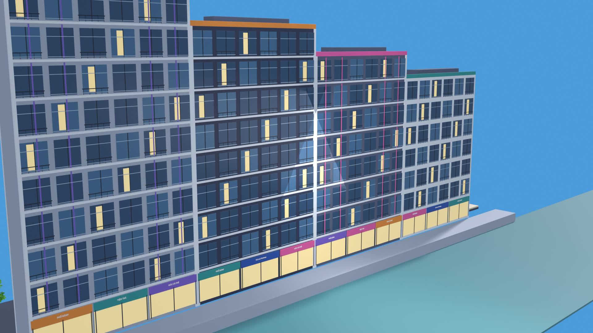
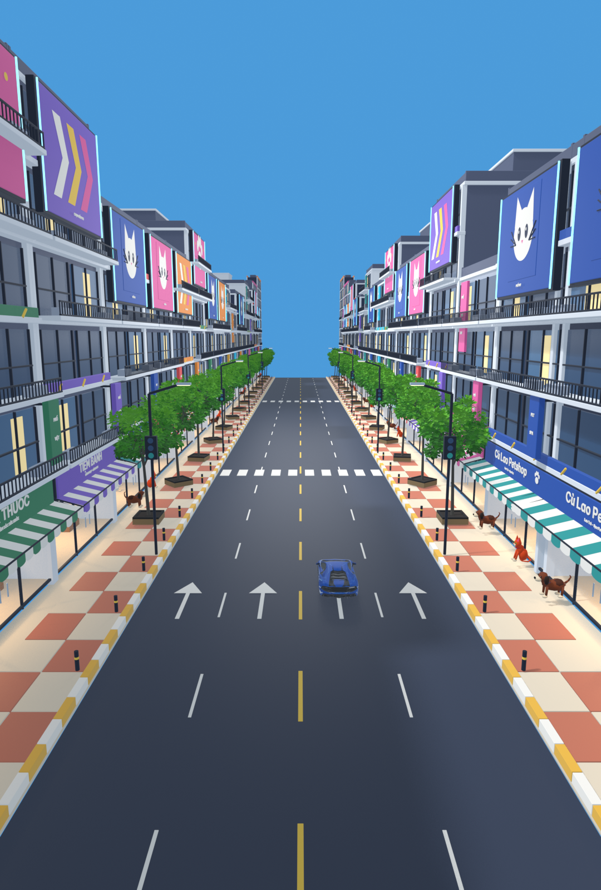
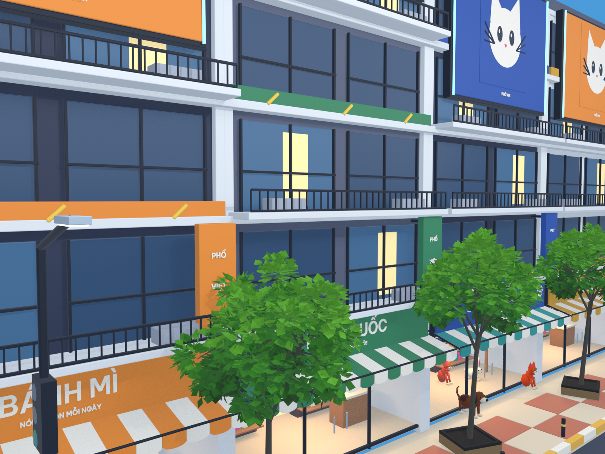
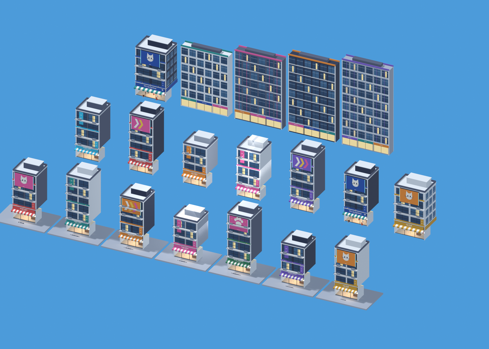
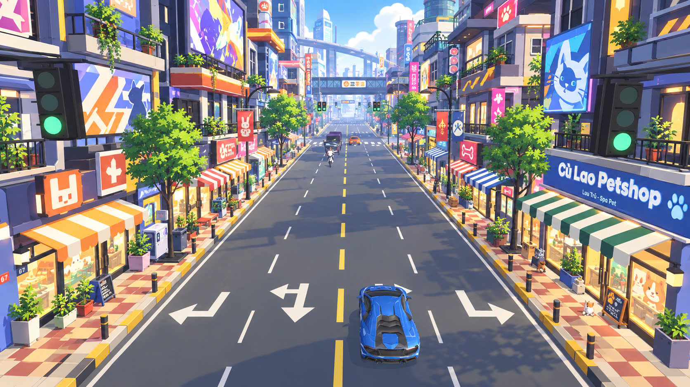

Nhà phố hiện đại · Màu sắc rực rỡ · Cửa hàng sáng ấm





13 mẫu cửa hàng + 2 nhà góc + 4 mẫu căn hộ ven sông.
Cây cối, xe đua và thú cưng chỉ được dùng lại trong ngữ cảnh xem mẫu. Không sửa asset nguồn hoặc phiên bản game đang chơi.
Ảnh là render mô hình thật trong Blender, chưa phải ảnh chụp gameplay sau tích hợp.
Mở file Blender nguồn · Ghi chú bộ mẫu

